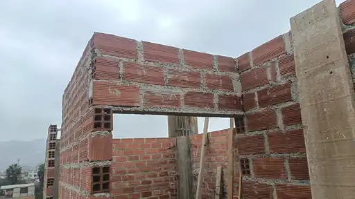

Edificación de seis niveles con departamentos flat y dúplex.
Observaciones técnicas en proyectos reales
Casos de obra y seguimiento técnico.
Las fotografías permiten examinar situaciones concretas de ejecución y comprender qué debe corregirse, qué requiere verificación y qué criterios técnicos deben revisarse antes de continuar la obra.
Albañilería, recubrimiento, escalera y concreto armado.
Criterios de concreto armado y albañilería del RNE.
Caso disponible
Vivienda multifamiliar de seis niveles en Lima.

4 observacionesVivienda multifamiliar · Lima
Observaciones de ejecución en albañilería y concreto armado.
El análisis revisa un vano de albañilería, el recubrimiento de una columna, la garganta de una escalera y la calidad del concreto en una viga. Cada fotografía puede ampliarse y está acompañada por una explicación técnica y las verificaciones necesarias.
2 deficiencias visibles
2 puntos por verificar
Fotografías ampliables
Aspectos constructivos revisados
Cuatro situaciones observadas en el proyecto.
Vano de albañilería
Hiladas de ladrillo apoyadas aparentemente sobre barras de acero, sin un dintel de concreto armado claramente conformado.
Recubrimiento de columna
Armadura ubicada muy próxima al límite del vaciado, cuya separación debe medirse antes de colocar el concreto.
Garganta de escalera
Espesor visualmente reducido que debe compararse con los planos y el cálculo estructural.
Concreto en viga
Cangrejeras, acero visible y presencia de madera en una zona que requiere evaluación y reparación técnicamente definida.
Alcance de la revisión
La fotografía orienta el análisis, pero no sustituye la comprobación en obra.
Las observaciones se limitan a lo que puede reconocerse en las imágenes. Las dimensiones, el refuerzo, los apoyos, la resistencia del concreto y la capacidad estructural deben confirmarse mediante planos, mediciones, ensayos o inspección presencial, según corresponda.
- El recubrimiento debe medirse desde la cara final del concreto hasta el refuerzo más cercano.
- El espesor de la escalera debe compararse con el diseño estructural.
- Las cangrejeras deben evaluarse en profundidad y extensión antes de reparar.
- Por confidencialidad, no se publican nombres ni la dirección exacta del proyecto.
Revisión de tu obra
Detectar una observación antes de cubrirla puede evitar retrabajos y decisiones costosas.
Comparte fotografías, videos, ubicación, etapa y planos disponibles. Se determinará si corresponde una consulta remota, revisión documentada o visita técnica.